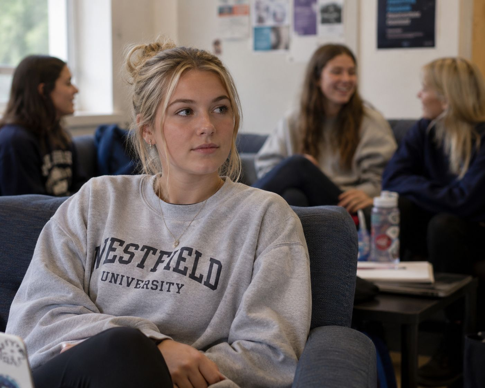
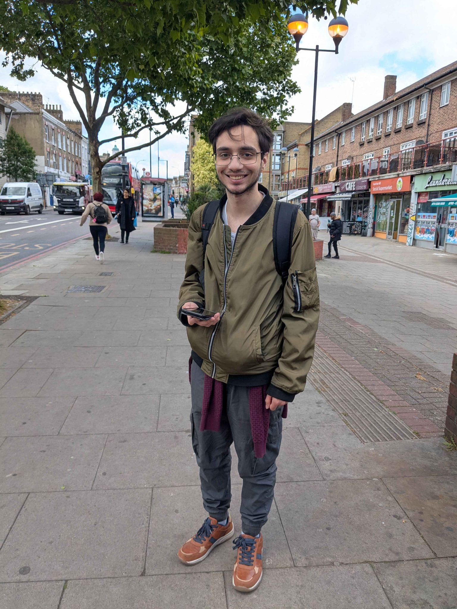
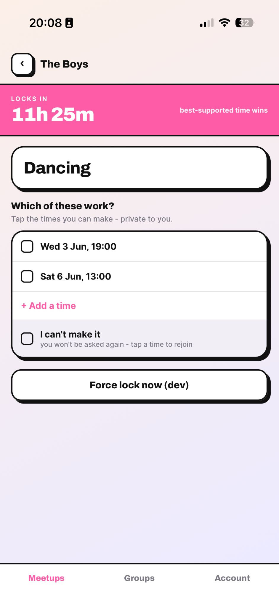
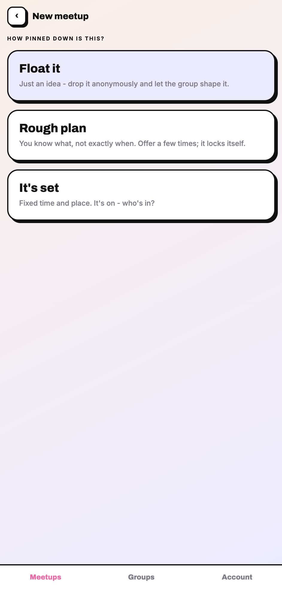
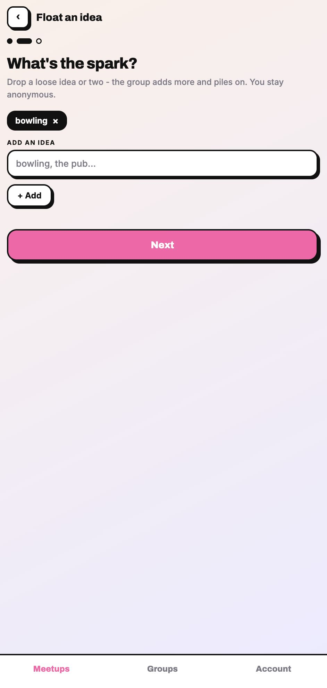
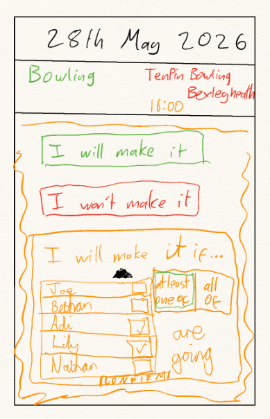
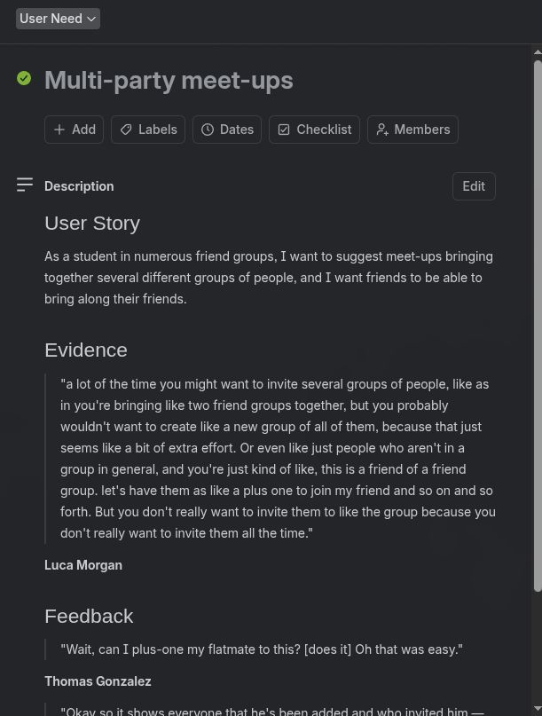
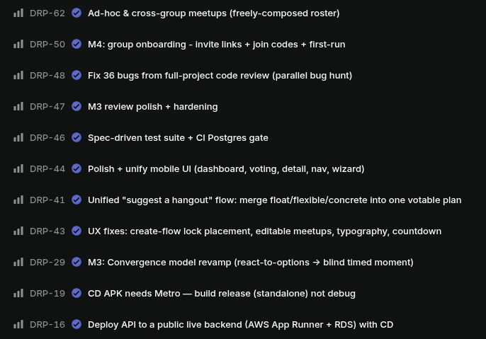

DRP02 - Nelson Gong, Noah Seymour, Lukas Trakimas, James Hughff
Meet Vasanth
•Age 21
•Studies Law at St. Andrews
•Enjoys playing volleyball and board games
•Loves to cook for his friends
•Extroverted and reliable
The organiser.
The Organiser
Vasanth's Christmas break, mapped as he felt it
The organiser's problem
Vasanth loves to meet his friends, but organising is difficult and chasing replies from group members is frustrating.
Meet Milly
•Age 19
•Studies English Literature at St. Andrews
•Likes to play cello and read
•Recently joined her university's netball society
•Shy and introverted
The passive participant.

The Participant
Milly's netball social, mapped as she felt it
The participant's problem
Milly would love to engage with her netball society's socials more, but she is hesitant because she wants to be sure her friends are going too.
Research
To better understand this problem, we interviewed university students about their social lives.
“
If I drummed up the plan, and it's taken considerable time, looking at logistics, pricing, whether everyone's okay with it, and then it falls through after all of that, that's quite frustrating.
Eddie, 21 - the organiser
3rd year Psychology at Goldsmiths

“
As days went past, [the meetup] got more drawn out, second thoughts crept in, and more and more people ended up pulling out.
Chloe, 19 - the passive participant
2nd Year International Relations at King's College
“
If [I'm meeting] a friend of a friend, my attendance is conditional on my friend being there. I'll wait for them to respond first, then decide.
Luca, 20 - the passive participant
BioChem at Oxford
Two key stakeholder groups
1. Suggestors
One sided and exhausting. Awkward to push for replies.
2. Participants
Uncertainty compounds uncertainty. Some people's participation is contingent on others.
50%+
of our 47 survey respondents said over a third of meet-ups never made it out of the chat.
60%
said the meet-up time gets moved half the time or more.
87%
send a maybe or delay their response to a plan they are unsure about.
a decade ago
7%
→
today
22%
of young people have one or no close friends.
Onward,Age of Alienation: Young people are facing a loneliness epidemic, [https://ukonward.com/reports/age-of-alienation-loneliness-young-people/]
25%+
of lonely young people have sought therapy.
BACP, Loneliness impacting majority of young people's mental health, [https://www.bacp.co.uk/news/news-from-bacp/2025/20-june-loneliness-impacting-majority-of-young-people-s-mental-health/]
Opportunity - how might we
How might we reduce hesitancy in university friend groups when planning to meet up so that groups go from frustrating ‘maybe’ responses to a clear consensus?
Demonstration
Suggesting a meetup
User Story
As a social member of my friend group who tends to organise things
I want to be able to easily suggest meetups to my friends
So that I can see my friends more without the frustration of chasing responses
Core Interaction
Simplify suggesting a meetup
Our Initial Design
Your meetups dashboard
Suggest a meet
Live demo
Suggesting a meetup
on a real device
Added voting on times
Flexible vs fixed times

Vote on the times that work
Feedback
from usability testing
“
This form feels quite cluttered
“
It takes me a second to read through to make sure I understand where to put everything
After some refinement

How pinned down?
Who's it for?

What's the spark?
Roughly when?
···
User Story
As a new and introverted member of a friend group
I want to only attend social events if I already know people going
So that I feel comfortable
Core Interaction
Conditional attendance
Initial Mock-up
The “I'll make it if [people] are going” conditional - sketched first on paper, then built.
Paper sketch

Demonstration
Conditional attendance
User Story
As someone wanting to organise a meetup for my friends
I don't want to have to convince people to download a new app
@bethere/sharedSingle source of truth. Zod schemas + framework-free pure logic - vote tally · conditional-RSVP · blind reveal - feed the same types + validation into both the client and the server.
Git → CI → CDAndroid APK via CIWeb → VercelAPI → AWS App Runner (Docker)
Why this stack
TypeScript + pnpm monorepo
One language across client, server, and shared logic. Refactors are type-checked end to end.
tRPC v11 + Zod
A fully type-safe API with zero hand-written types or codegen. One schema validates server input and types the client.
Expo / React Native
One codebase ships to iOS, Android, and web - so we could test with real users on whatever device they already had.
Fastify 5
A lightweight, fast Node server - a thin, low-overhead host for the tRPC layer.
Postgres + Drizzle ORM
Groups, votes, and RSVPs are inherently relational, so the database gives us integrity for free, with typed SQL.
Clerk
Managed auth with real Google OAuth - we don't roll our own identity or security.
Git → GitHub Actions CI/CD
Lint, typecheck, and tests run on every change, with continuous deployment to AWS App Runner (API) and Vercel (web).
Evaluation
What went well
Continuous feedback from new and recurring users gave us diverse insights into how the problem is actually solved.
Letting users plan real meetups with their friends using BeThere helped identify the pain points of the app.
Agile development

Trello for mapping user needs.

Linear for engineering issues.
What we would do differently
Testing: a stronger test suite with wider code coverage would've prevented bugs from recurring.
Interviews: run them before building, not after - validate the need first.
Looking ahead
Milly's availability may change after confirming she'll BeThere.
People who will go if Milly goes want to be notified she might not make it.
Plus-ones are still an awkward problem.
Vasanth may welcome plus-ones to his meetup, but there are some people he would prefer not to see there.
Meetup logistics are full of nuance - we cannot capture every case.
An in-app chat dedicated to the meetup, available after confirmation, would let the group settle the details.
Use ← → to move · N speaker notes · F fullscreen · 1-9 jump